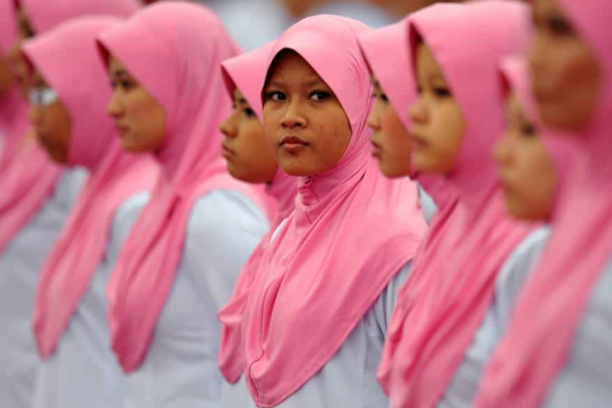
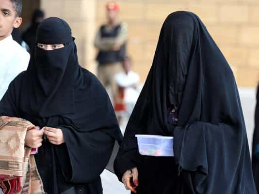

John Carver is a four year ROK veteran with over fifty articles of SJW-triggering truth bombs on archive. You can follow him on Twitter if you are so inclined.


When men are traveling around Southeast Asia, Kuala Lumpur does not immediately come to mind as a hunting ground for prime female companionship. It’s always been overshadowed by the likes of Thailand, Vietnam, Indonesia, or the Philippines in that regard.
However, if one is willing to give the place a closer look rather than the obligatory two day stop in between Singapore and the southern Thai islands, the second most developed city in the region (after Singapore) has some interesting potential in the age of Internations and Tinder.
First of all, don’t let Malaysia’s Islamic label fool you. It’s really only about 60% of the population, even less so in the major cities, and a great deal of people are quite secular. You can easily get a steady rotation of dates and relationships in this town with women from all manner of religions and cultures without excessive difficulty.
So beyond that, don’t immediately dismiss the city just because of its expensive alcohol, mega mall culture, and relative lack of tourist sites. Hotels, food, and getting around the city is cheap on the down in the dumps Malaysian Ringgit (nearly 4.5 to a U.S. dollar as of writing), so you should take advantage of dollar arbitrage and get it while it’s hot.
Here are some of the most likely women you will come across in “KL” as it is mostly called.

Oh hello there…
Kuala Lumpur is home to a sizable contingent of Persian expatriates who are either seeking greater economic opportunities abroad, or are simply looking to escape the numerous lifestyle restrictions (such as alcohol consumption and women having to wear the Islamic hijab) which are present in their home country and not in Malaysia.
Sounds fair enough to western men passing through the city, because a lot of these women are absolutely stunning. But why do so many of them end up in Malaysia, which is hardly a paved-in-gold 1st world paradise?
Well it all boils down to politics, because Turkey and Malaysia are among the few nations within easy reach of Iran which grant visa-free entry to Iranian passport holders. Trust me, a lot would want to get to the United States or Australia if they could (and the local men would be glad to have them).
Iranian women in Malaysia are often quite attractive, very friendly, warm, feminine, speak great English, and are “Muslim” on paper only. In fact, a lot dislike the religion they were born into and tend to live a very secular lifestyle while abroad.
Hands down the best possible choice in the city, and it’s a shame there just isn’t more of them. Your best bets for success are via Tinder, Internations, and various bars and clubs in Bukit Bintang.
Making up roughly a quarter of the nation’s population, with higher percentages in the largest cities of Kuala Lumpur, Ipoh, and Penang, the Chinese in Malaysia are mostly descended from immigrant workers who came to the Malay peninsula during the peak years of the British Empire (late 19th and early 20th century).
Think of the them as like a capitalist, non street spitting (thank god), and reasonably good English speaking version of the PRC Chinese. In other words, there is not too much to complain about from a cultural standpoint.
The women are friendly, open to dating foreigners, and are often fairly hot, though not quite up to the Iranian standards for all three. However, there is a lot more around in Kuala Lumpur, and their lack of Islam means that dating them should not entail any type of religious taboo when it comes time to meet Mummy and Daddy.
Found on Tinder, Internations, nightclubs, or all manner of mega malls around town.
Making up about 10% of Malaysia’s population (and again with higher percentages in the major cities like KL), The Indians are also primarily descended from migrants who came during the British Empire days, and particularly from the southern Indian state of Tamil Nadu.
They are among the most economically stratified groups in the country, with many Indians living anywhere from destitute poverty to occupying prestigious roles in Medicine, Law, or Information Technology. Assuming you meet them on Tinder in Kuala Lumpur (where you will find the most open-minded Indian women to date non-Indians), they will usually be from the higher end of the socio-economic ladder.
Beauty standards vary considerably, but there is more than a couple of stunners out there. They are a noteworthy middle-of-the-road option in Kuala Lumpur, but the odds aren’t nearly as favorable compared to the Persians or Chinese.

Well duh, the country is named “Malaysia” after all. The dominant ethnic group in the country usually follows Islam, and you will see a great deal of Malay women around covered in their Islamic garb. However, Malaysia is a moderate Muslim nation and wearing such clothing is entirely optional, and a sizable percentage of women in the larger cities choose to do without it.
Nonetheless, most travelers and expats aren’t particularly fussed with dating the Malays, both for the sake of the religious setbacks and the fact that your average Malay women isn’t nearly as attractive or openly friendly as some of the previously mentioned options.
You will find some rebels though, particularly at the bars in Bukit Bintang and on Tinder (they’ll be wearing western clothes). Just be prepared to have to keep your relationship with them entirely secret, and in many cases it will be a one night only affair.

Kuala Lumpur is a popular holiday and shopping destination for more well-to-do Saudi citizens, due to the cities abundance of luxury shopping malls and the fact that they are allowed 90 days of visa free access into Malaysia on their otherwise kind of shitty passport.
They can be spotted in abundance around Bukit Bintang and inside the shopping malls, with the woman being covered in full Ninja garb while her husband (required company) is often sloppily dressed and easily 50 pounds overweight.
Best avoid these questionable women-that-you-can’t-see if you don’t want to wind up at the wrong end of a Kebab knife, or some other type of Middle Eastern blade.
Having said that, if you can get your Saudi Arabian flag then I have full faith in you that you can get anything. It’s your life after all, and that’s a wrap for the most likely women you will come across in Kuala Lumpur.
Read More: The Decimation Of Western Women Is Complete